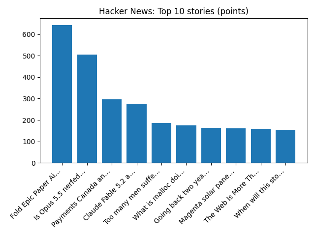

YOUR DAILY INTELLIGENCE BRIEF · 2026-11-09
The world, in focus.
No recent news coverage available.
🌍 Global coverage
🌌 Beyond Earth

Rigel and the Witch Head Nebula
📜 On this day
- 2023 U.S. surgeons at NYU Langone Health announce the world's first whole eye transplant.
- 2020 Second Nagorno-Karabakh War: An armistice agreement is signed by Armenia, Azerbaijan and Russia.
- 2014 A non-binding self-determination consultation is held in Catalonia, asking Catalan citizens their opinion on whether Catalonia should become a state and, if so, whether it should be an independent state.
- 2012 A train carrying liquid fuel crashes and bursts into flames in northern Myanmar, killing 27 people and injuring 80 others.
📈 Topic activity
Source health: 24/24 healthy
View original detailed report
Daily Knowledge Garden — 2026-11-09
🧭 Daily Summary
Global coverage includes Republican congressman to force impeachment vote on Defence Secretary Hegseth; Internal probe into CEO Jensen Huang and 'foreign intelligence' weighs on high-flying Nvidia shares - AP News; Boeing to cut 5% of commercial jet workforce amid production struggles - Reuters. Local coverage includes The Alvarez Law Firm Helps Northern Virginia Drivers Facing Reckless Driving Charges During Holiday Travel - azcentral.com and The Arizona Republic; Councilman seeks to bring downstate lawmakers aboard N. Va. transit to make case for funding - ALXnow.
🌍 Global News (cross-source)
- Republican congressman to force impeachment vote on Defence Secretary Hegseth — BBC — World
- Internal probe into CEO Jensen Huang and 'foreign intelligence' weighs on high-flying Nvidia shares - AP News — AP — Politics (Google News)
- Boeing to cut 5% of commercial jet workforce amid production struggles - Reuters — Reuters — Headlines (Google News)
- Hegseth calls Iran war necessary and waves off ‘the noise’ of expected impeachment push - AP News — AP — Headlines (Google News)
- EXCLUSIVE: French officials blame Iran for refrigerator hacks, vow retaliation - Reuters — Reuters — Headlines (Google News)
🏙️ Local News
- The Alvarez Law Firm Helps Northern Virginia Drivers Facing Reckless Driving Charges During Holiday Travel - azcentral.com and The Arizona Republic — Google News — Northern Virginia
- Councilman seeks to bring downstate lawmakers aboard N. Va. transit to make case for funding - ALXnow — Google News — Northern Virginia
- Local, state leaders still debating who should pay for future Metro service - FFXnow — Google News — Northern Virginia
- Potential bump in Metrobus fares raises concerns for County Board member - ARLnow — Google News — Northern Virginia
- 9 Ways to Celebrate Veterans Day in Northern Virginia and DC - Northern Virginia Magazine — Google News — Northern Virginia
🚀 Hacker News (Top 5)
- Goodbye Claude, hello Pi — 689 points, 424 comments
- Claude Code's "Don't Ask Again" exposes passwords in 1,122 public GitHub files — 582 points, 394 comments
- Goldman Sachs is pulling Claude Code from its bankers and traders — 566 points, 339 comments
- Nvidia Board of Directors Is Investigating Jensen Huang — 360 points, 275 comments
- Llama-modchip: 284B DeepSeek on 64GB RAM, no GPU — 351 points, 146 comments

🌍 Wikipedia — On This Day (selected)
- 2023 — U.S. surgeons at NYU Langone Health announce the world's first whole eye transplant.
- 2020 — Second Nagorno-Karabakh War: An armistice agreement is signed by Armenia, Azerbaijan and Russia.
- 2014 — A non-binding self-determination consultation is held in Catalonia, asking Catalan citizens their opinion on whether Catalonia should become a state and, if so, whether it should be an independent state.
- 2012 — A train carrying liquid fuel crashes and bursts into flames in northern Myanmar, killing 27 people and injuring 80 others.
- 2012 — At least 27 people are killed and dozens are wounded in conflicts between inmates and guards at Welikada prison in Colombo.
🎲 Wikipedia — Random Article
Sylvester Uphus
He served on the Ashley Township board. He lived in Sauk Centre, Minnesota.
https://en.wikipedia.org/wiki/Sylvester_Uphus
🌌 NASA APOD
Rigel and the Witch Head Nebula
Feed Health
- Reuters — Headlines (Google News): ok (15 articles)
- Reuters — World (Google News): ok (15 articles)
- Reuters — Business (Google News): ok (15 articles)
- BBC — World: ok (15 articles)
- BBC — Tech: ok (15 articles)
- BBC — Business: ok (15 articles)
- BBC — Science: ok (15 articles)
- AP — Headlines (Google News): ok (15 articles)
- AP — Politics (Google News): ok (15 articles)
- AP — Business (Google News): ok (15 articles)
- NPR — Top Stories: ok (10 articles)
- NPR — Politics: ok (10 articles)
- NPR — Business: ok (10 articles)
- NPR — Science: ok (10 articles)
- NPR — Technology: ok (10 articles)
- ScienceNews: ok (15 articles)
- ScienceDaily — Top: ok (15 articles)
- Nature — Technology: ok (15 articles)
- Google News — Northern Virginia: ok (15 articles)
- Google News — Northern Virginia traffic: ok (15 articles)
- Google News — Northern Virginia weather: ok (15 articles)
- Wikipedia — On This Day: ok (10 articles)
- Wikipedia — Random: ok (1 articles)
- NASA — APOD: ok (1 articles)
Runs so far today: 2